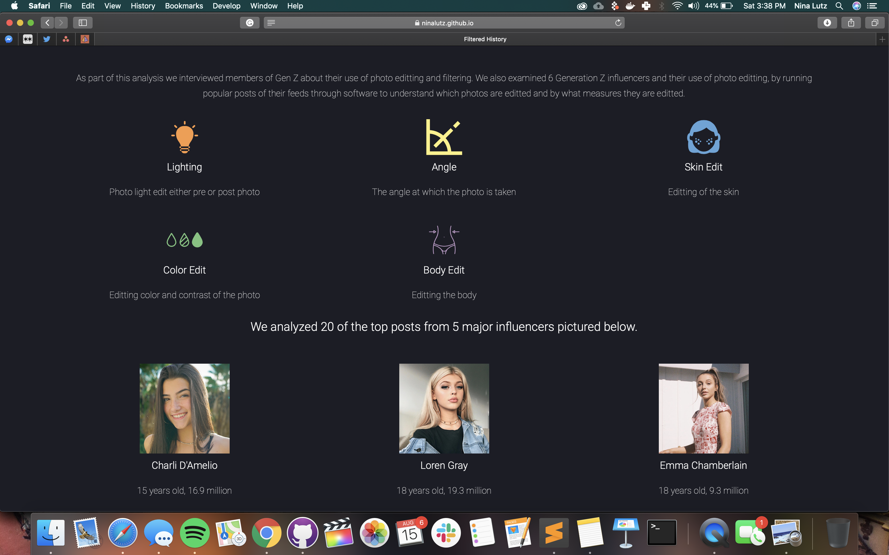
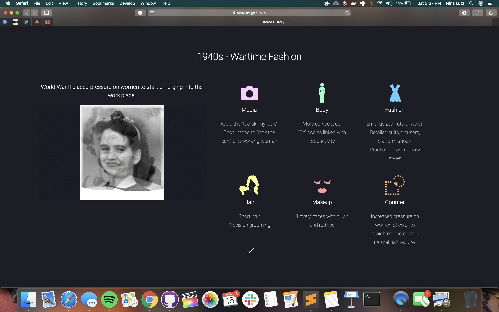
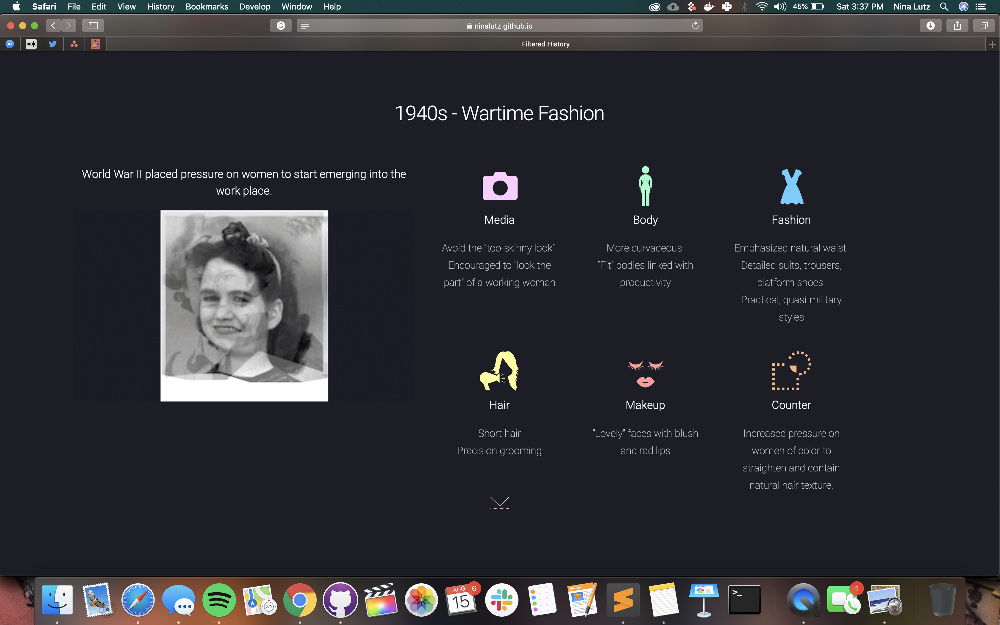
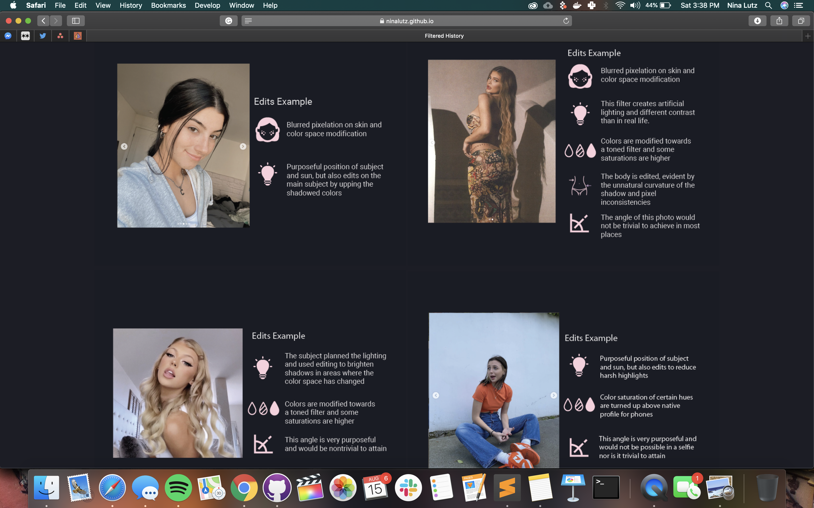
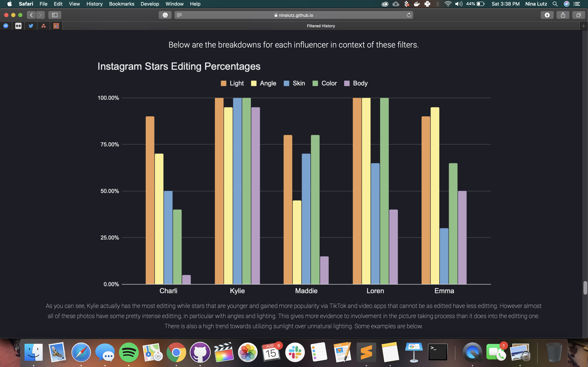
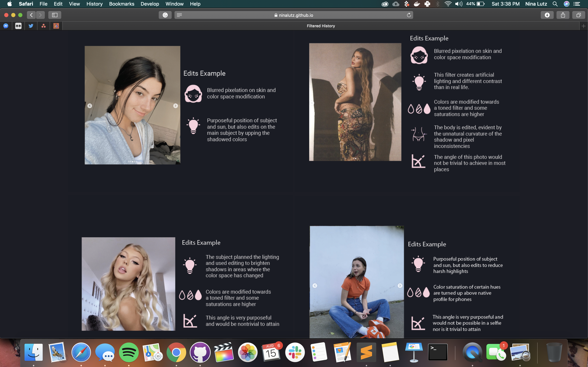
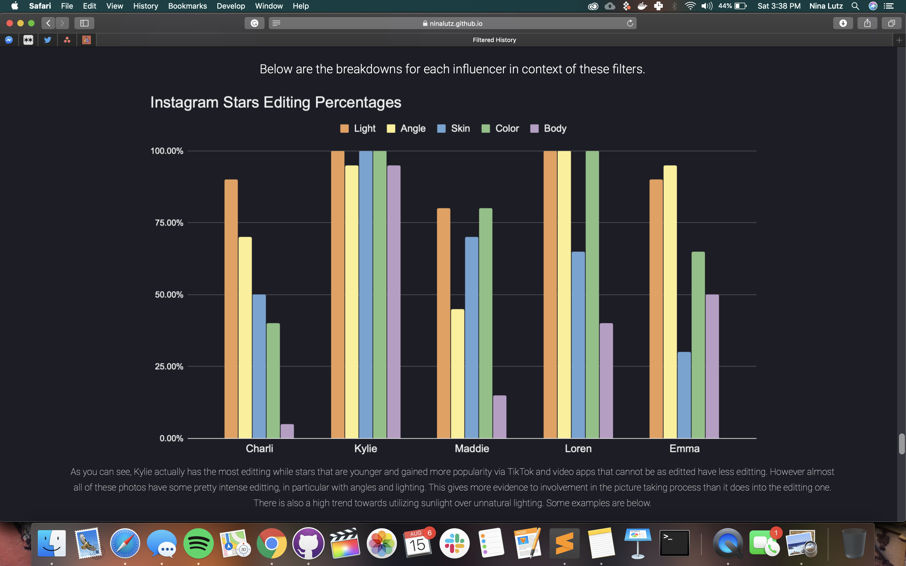

This was a group project for Ethan Zuckerman's "Fixing Social Media" class in Spring 2020. I developed the website and helped to look at a schema for analyzing different properties of Instagram filters for popular Gen Z influencers, who's photos I scraped and built a software suite to analyze for a variety of graphical properties. Our team also did a historical anlaysis, in which I did pictorial analysis of various media from different decades. Go check out the website here.
 

 


